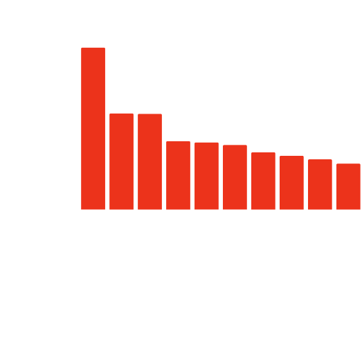
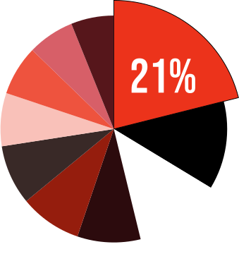

Les suites de films

Les suites de films, ou "sequels" en anglais, représentent une part fascinante de l'industrie cinématographique. Elles sont conçues pour continuer l'histoire d'un film original, offrant aux spectateurs une nouvelle plongée dans des univers qu'ils ont appréciés. Ces films ne se contentent pas de reprendre des personnages et des intrigues aimés, mais cherchent aussi à élargir leur univers, à approfondir les arcs narratifs et à introduire de nouveaux éléments captivants. Leur création est souvent un équilibre délicat entre la fidélité à l'œuvre originale et l'innovation, visant à captiver à la fois les fans de longue date et les nouveaux spectateurs.
Le choix de se concentrer sur un corpus de 100 films permet une analyse approfondie et maîtrisée. Ces 100 films ont été sélectionnés en tant que meilleures suites selon les votes des utilisateurs IMDb, ce qui offre une base qualitative de données, car ils reflètent les préférences et les appréciations d'un large public cinéphile. Se limiter à 100 films plutôt que de tenter d'englober les 1200 suites disponibles rend la tâche plus gérable et les conclusions plus pertinentes. De plus, en se concentrant uniquement sur les suites et en excluant les films originaux, l'étude peut se pencher spécifiquement sur les éléments qui font le succès ou l'échec d'une suite.
La suite la plus marquante - The Dark knight


L'impact de 'The Dark Knight' dépasse les frontières des préférences personnelles et des comparaisons avec d'autres grands films comme 'The Godfather II'. Cette suite, marquante non seulement par sa réalisation et son interprétation, mais aussi par son succès au box-office, a su captiver l'audience américaine, générant une part significative des revenus cinématographiques de 2008. Elle s'est distinguée non seulement par son approche plus sombre et nuancée du genre de superhéros, mais aussi par une résonance culturelle qui perdure. Sans prétendre débattre de sa supériorité, il est indéniable que 'The Dark Knight' a marqué une génération et continue d'inspirer le cinéma moderne.
Nombre de suite par décennie
Ce graphique montre l'évolution du nombre de suites de films sorties par décennie, de 1965 à 2031. On remarque une augmentation progressive du nombre de suites, avec un pic entre 2009 et 2020, ce qui suggère un intérêt croissant des studios de cinéma pour la production de séquelles durant cette période.
Fréquence de sortie
Ce graphique montre la fréquence annuelle des sorties de films qui font partie du top 100. On constate que l'année 2011 se démarque avec sept films figurant parmi les 100 meilleures suites. Cela suggère une tendance ou un pic d'activité cinématographique cette année-là. Globalement, on observe une augmentation des occurrences des sorties de films à partir des années 2000, ce qui pourrait refléter une industrie cinématographique en croissance et une production accrue de suites populaires.

Ce graphique représente le nombre d'occurrences par année de sortie pour l'ensemble des franchises cinématographiques. En comparaison avec le graphique précédent, qui se concentrait uniquement sur le top 100, celui-ci inclut toutes les franchises existantes. On constate un pic significatif dans les années 2010, soulignant une période de forte activité dans la production de films issus de franchises. Cette hausse suggère une préférence croissante pour les films en série, qui attirent le public grâce à des marques et des histoires déjà établies.
Proportion des genres
Ce diagramme en camembert illustre la répartition des genres cinématographiques. Le segment le plus large correspond au genre Action, représentant 21% du total des genres les plus populaires. Les autres genres sont répartis de manière plus homogène. Ce graphique permet de visualiser rapidement quel genre domine au sein de la sélection analysée. Il met en évidence la popularité des films d'action par rapport aux autres catégories, tout en montrant la diversité des genres présents dans l'industrie cinématographique.
Durée moyenne par genre
Sur la base des 100 meilleures suites de films notées par les utilisateurs IMDb, ce graphique en barres révèle que le genre Comédie présente la durée moyenne la plus courte par rapport aux autres genres. Cela pourrait refléter une tendance des comédies à opter pour des narrations plus concises et dynamiques. Par rapport à la moyenne générale, les comédies semblent privilégier la brièveté.
Fréquence de sortie films d’actions
Le graphique, établi à partir des 100 suites les mieux notées sur IMDb, montre que les films d'action connaissent des variations significatives en termes de nombre par décennie. La décennie 2010 se distingue particulièrement, indiquant une prédilection marquée des utilisateurs pour les suites de films d'action pendant cette période.